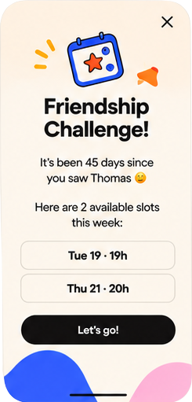

D'abord le créneau.
Ensuite le lieu.
Ensuite le lieu.
1
Overlap compare les dispos de tout le groupe et propose 2–3 créneaux communs.
2
Vous confirmez en un clic. Puis Overlap suggère un lieu pratique pour tous.


Écrans de la maquette Overlap (prototype)
3/4